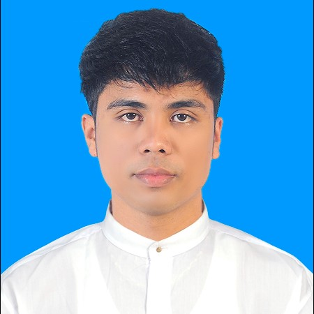

Zeyar Min

Date of Birth
August 18, 1993
Contact
Address:
No.28, Kwan Ywal Dan Street,
Kyee Myin Daing Township, Yangon, Myanmar.
Phone:
09795857088
Email:
zeyermin@gmail.com
Availability
I can be able to work instantly
Experience
IT Assistant(2016-2018) - Pyay Garden Residence
Install and setup wireless AP, slove WiFi error as per resident complaint
Provides necessary IT support to staff
Troubleshoot CCTV network & PABX system
Network maintenance (Customers & Office)
Troubleshoot and maintenance (Office Computer)
Installs IT related equipment (PCs, Printers and Scanners)
Install door lock security card for Resident
Field Operation Technician(2018-2020) - Telecom International Myanmar (Mytel)
Monitoring the progress and acceptance test, and completing all the documents comply with company’s regulations
Setting up the equipment and providing high quality services to customers
Managing BTS database, hand over the design to partners, ensuring it and fixing all the mistakes
Operating and maintaining BTS/Link in many required different ways
Managing all the infrastructure equipment and network assets
Other tasks assigned by the manager
Transmission Engineer(2021) - Viettel Construction Myanmar (Mytel)
Preparation for the upcomming disaster
Perform project and operational requirements
Perform corrective maintenance cycle check on all site equipment.
Troubleshooting fault on network systems.
Remote support & check different local team to solve the network problem on time
Education
Bechelor of Engineering (Electronic Communication)
Certification
A+ Hardware Course
Network Engineer Course (MS Server 2013)
Cisco Networking Course
Elementry English 4 Skills (Strategy First University)